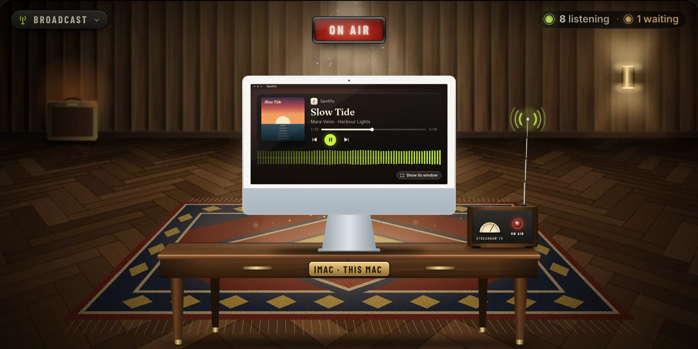

Apps
Tools for people
who make sound.
Each one runs on your own computer, in its own window and inside your DAW. Each has a page of its own with the films, the fine print and the prices.

 Your session, live and lossless, to anyone with the link. Each listener keeps a mix of their own.
Free · products from $5 a month
Open StreamDAW
Your session, live and lossless, to anyone with the link. Each listener keeps a mix of their own.
Free · products from $5 a month
Open StreamDAW

 Any recording comes apart — voice, drums, bass, guitars, keys — each part repaired and mixed, all on your Mac.
Free up to a minute · then $7 a month or $60 a year
Open Audioctor
Any recording comes apart — voice, drums, bass, guitars, keys — each part repaired and mixed, all on your Mac.
Free up to a minute · then $7 a month or $60 a year
Open Audioctor
Audioctor needs a Mac with Apple silicon; StreamDAW runs on that or on Windows 10 and 11. Both come as an app and a plug-in — AU and VST3 on a Mac, VST3 on Windows. One Snowstar account covers them. Something else you need? Tell us the job.